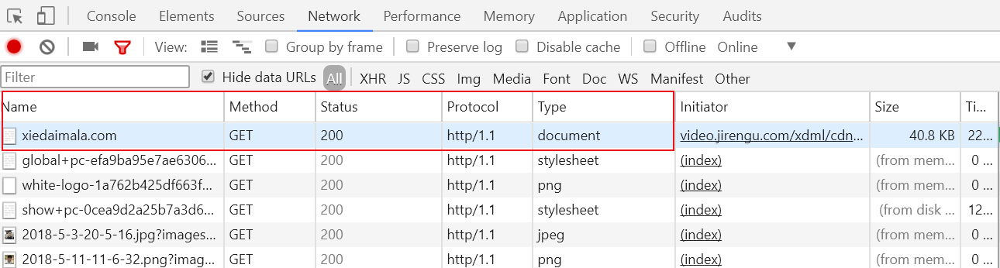
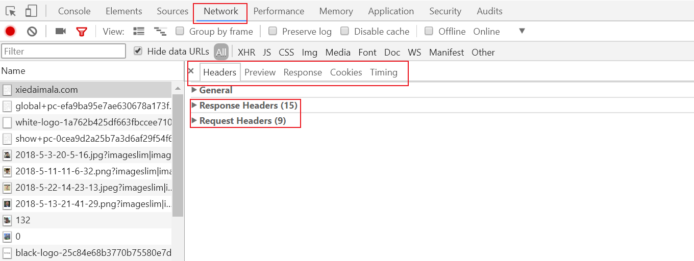
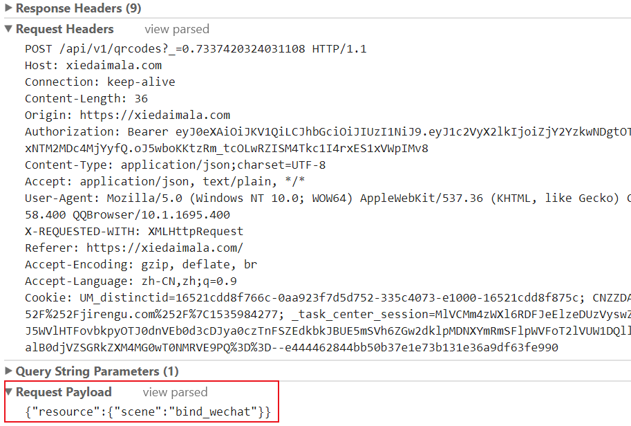
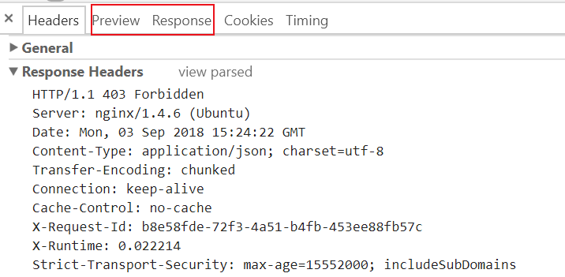

HTTP相关姿势
HTTP 的作用就是指导浏览器和服务器如何进行沟通。
curl命令
curl命令是一个利用URL规则在命令行工作的文件传输工具。
支持文件的上传和下载。
| 常用命令 | 功能 |
|---|---|
| -X/–request | 指定请求方式，GET/POST/PUT/PATCH/DELETE/HEAD/OPTIONS |
| -H/–header | 自定义头信息传递给服务器 |
| -d/–data | HTTP POST方式传送数据 |
| -v/–verbose | 详细输出，包含请求和响应的头部 |
| -s/–silent | 静默模式，不显示错误和进度 |
| -O/ | 从远程下载文件到当前目录，保留原文件名 |
命令使用举🌰
curl -X POST https://www.baidu.com
不带-X 默认为GET请求方式
- curl -X POST -H “superman285:xxx” https://www.baidu.com
- curl -X POST -v -H “superman285:xxx” https://www.baidu.com
- curl -X POST -v -s -H “superman285:xxx” https://www.baidu.com
请求内容为
> POST / HTTP/1.1
> Host: www.baidu.com
> User-Agent: curl/7.59.0
> Accept: */*
> superman285:xxx>
响应内容为
< HTTP/1.1 302 Found
< Connection: Keep-Alive
< Content-Length: 17931
< Content-Type: text/html
< Date: Mon, 03 Sep 2018 16:36:53 GMT
< Etag: “54d97485-460b”* Server bfe/1.0.8.18 is not blacklisted
< Server: bfe/1.0.8.18
<
网页html内容…
- curl -X POST -d “123456789” -v -s -H “superman285:xxx” https://www.baidu.com
请求内容为
> POST / HTTP/1.1
> Host: www.baidu.com
> User-Agent: curl/7.59.0
> Accept: */*
> superman285:xxx> Content-Length: 9
> Content-Type: application/x-www-form-urlencoded
>
1234567890
响应内容为
< HTTP/1.1 302 Found
< Connection: Keep-Alive
< Content-Length: 17931
< Content-Type: text/html
< Date: Mon, 03 Sep 2018 16:36:53 GMT
< Etag: “54d97485-460b”* Server bfe/1.0.8.18 is not blacklisted
< Server: bfe/1.0.8.18
<
网页html内容…
curl -O https://ss0.bdstatic.com/img/logo_baidu.com
🌀 注意
curl -s -v -H “superman285:666” https://xiedaimala.com/search?keyword=scss&type=courses&page=1
如果在命令行中输入这行命令，只能识别一个查询参数keyword=scss，解决方法：
- 转义： https://xiedaimala.com/search?keyword=scss\&type=courses\&page=1
- 加双引号：“https://xiedaimala.com/search?keyword=scss&type=courses&page=1”
参考博客园-mofy文章 https://www.cnblogs.com/z-books/p/6228284.html
请求与响应的构成
HTTP请求和HTTP响应都包含4部分
HTTP请求
- 请求方法 路径 协议/版本号
- 请求头
- 空行
- 请求数据正文
请求具体格式
- 第1部分：动词 路径 协议/版本号
- 第2部分：key1:value1
- 第2部分：key2:value2
- 第2部分：key3:value3
- 第2部分：Content-Type
- 第2部分：Host
- 第2部分：User-Agent
- 第3部分：一个回车(\n)
- 第4部分：要上传的数据
请求最多包含4部分，最少包含3部分，第4部分可为空。
💡 请求方法动词有：
GET | POST | PUT | PATCH | DELETE
💡 路径默认为“/”,路径包括查询参数，但不包括锚点。
✔ /search?keyword=SASS&type=courses&page=1
× /search?keyword=SASS&type=courses&page=1#2
💡 第2部分Content-Type标注了第4部分内容的格式
💡 要上传的数据最常见的是用户名和密码
💡 查看第四部分内容在FormData或Request Payload中。
HTTP响应
- 状态行 「协议/版本号 状态码 状态描述」
- 响应头
- 空行
- 响应数据正文
响应具体格式
第1部分：协议/版本号 状态码 状态解释
第2部分：key1: value1
第2部分：key2: value2
第2部分：Content-Length
第2部分：Content-Type(标注第4部分格式)
1
例如text/html | application/javascript | json | image/png
第3部分：一个回车(\n)
第4部分：要下载的内容
💡 第2部分Content-Type标注了第4部分内容的格式
💡 第2部分中的Content-Type遵循MIME规范
状态码
- 1xx 不常用
- 2xx 表示成功
- 3xx 表示滚吧 301表示搬家了永远不回来了,302表示临时外出可能以后还回来
- 4xx 表示你错了 (访问者出错了，例如地址打错了等)
- 5xx 表示好吧,我错了 (服务器出错了，例如服务器挂了、服务器停止了)
状态码是服务器对浏览器说的话，需要记住。
常见状态
- 200 OK 客户端请求成功
- 301：Move Permanently 永久重定向，请求的资源已被永久的移动到新URI
- 302：Found 临时重定向 与301类似，但资源只是临时被移动
- 400 Bad Request 客户端请求的语法错误，服务器无法理解
- 403 Forbidden 服务器拒绝执行此请求
- 404 Not Found 请求的资源不存在，例如，输入了错误的URL
- 500 Internal Server Error 服务器内部错误，无法完成请求
- 502 服务器网关错误，收到无效响应
请求和响应的第一部分都含有 协议/版本号
查看请求和响应的方法
打开浏览器开发者工具Developer Tools，Network选项卡，右键添加Method页签(如果没有的话。)
Method页签看GET或POST方法，status看状态码，protocol看协议/版本号，type看类型可以为document、script、png等

然后在Name页签点一下你想要查看的URI
在右侧弹出页的Headers,有General、Response Headers、Request Headers等信息

General
Request URL: https://xiedaimala.com/
Request Method: GET
Status Code: 200 OK
Remote Address: 114.215.175.213:443
Referrer Policy: no-referrer-when-downgrade
在Response Headers或Request Headers想查看响应或请求详情，关键来了：
点击view source
点击view source
点击view source
Response Headers/Request Headers右侧浅色小字
这儿可以查看到请求|响应内容的前3部分
🌀 请求的第4部分数据在Form Data或Request Payload中查看 [GET请求没有第4部分数据]

🌀 响应的第4部分数据在Preview或Response的tab中查看
